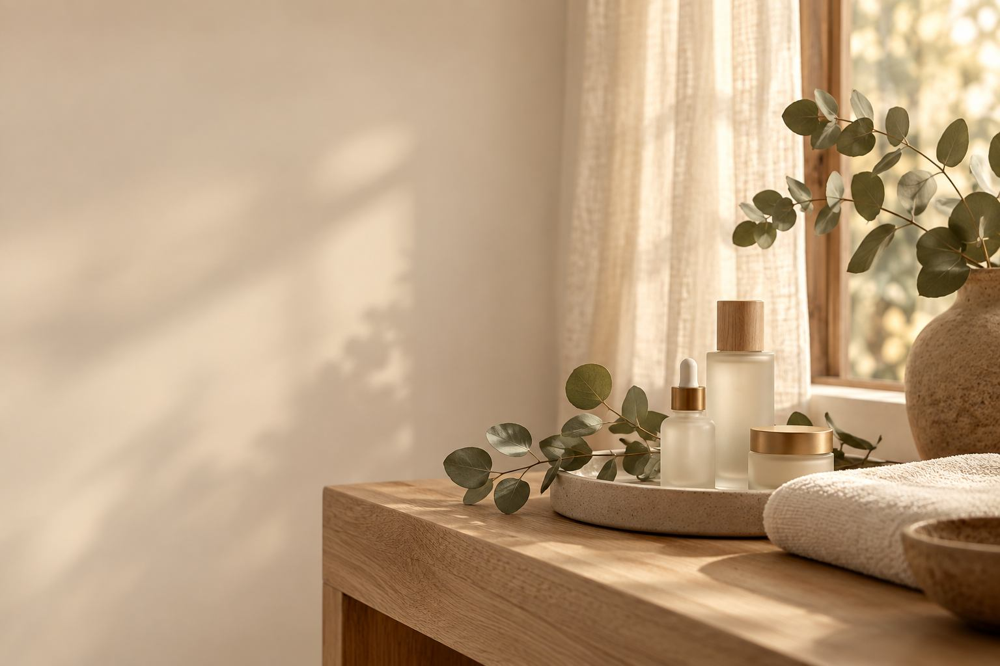

Tratamentos pensados para a saúde do seu fio
A avaliação personalizada é sempre o primeiro passo. A partir dela, o protocolo é montado sob medida: quando o couro cabeludo precisa de reparo, tratamos primeiro a pele — para só depois entrar com a regeneração dos fios.
› Começar pela avaliaçãoDiagnóstico capilar
primeiro passoO que é
Avaliação da pele e dos fios com equipamento de aumento (microcâmera dermatoscópica), para observar de perto o estado do couro cabeludo antes de qualquer decisão de tratamento.
Benefícios
- Mostra com precisão como está o tecido e os folículos
- Evita tratamentos genéricos que não resolvem o problema
- Base para montar o melhor plano para cada caso
Despigmentação a laser
sob avaliaçãoO que é
Sobrancelha que mudou de cor, ficou escura demais, com o formato errado ou com resíduo de uma micropigmentação antiga? A despigmentação a laser remove esse pigmento da pele com tecnologia própria para isso, sem agredir o tecido. A Ste Blume foi a primeira clínica a oferecer esse tratamento na cidade.
Benefícios
- Corrige cor, formato ou traço que não representam mais você
- Remove resíduo de pigmentação sem agredir a pele saudável ao redor
- Prepara o tecido para a regeneração ou um novo design
Regeneração folicular
sob avaliaçãoO que é
Quando traumas ou procedimentos antigos deixam o tecido denso e com baixa atividade — um "terreno" que não sustenta novos fios —, a despigmentação a laser prepara essa pele primeiro. Só depois, com o tecido saudável novamente, entra o protocolo de regeneração, com a linha Regenera Brows, para estimular o crescimento real dos fios.
Benefícios
- Recupera a saúde do tecido antes de estimular o crescimento
- Estímulo ao crescimento natural e real dos fios, não só aparência de mais cheio
- Acompanhamento contínuo da evolução
Design de sobrancelhas
sob avaliaçãoO que é
Micropigmentação com técnica de nanoblading: fios finíssimos, com caimento e cor que se misturam aos pelos naturais — sem sobrancelha marcada ou artificial. Feito sempre respeitando o formato único de cada rosto, nunca um molde padrão.
Benefícios
- Resultado realista, que se confunde com os fios naturais
- Valoriza o formato que já é seu, sem exageros
- Alinhado à saúde capilar em curso, quando há regeneração associada
Cuidados de manutenção
sob avaliaçãoO que é
Orientações personalizadas e indicação de produtos da linha própria (como o Regenera Brows) para manter a saúde folicular entre as sessões, prolongando o resultado do tratamento.
Benefícios
- Resultado mantido por mais tempo
- Rotina simples de aplicar em casa
- Produtos indicados conforme seu diagnóstico
Benefícios do cuidado com quem entende do assunto
Trata a causa, não só o efeito
Nenhum protocolo começa sem entender por que o fio parou de crescer.
Resultado natural
O objetivo é sempre parecer seu — sem exagero, sem padronização.
Acompanhamento de verdade
O cuidado não termina quando você sai do estúdio.

Qual protocolo é ideal para você?
Agende uma avaliação e descubra o caminho certo para a saúde das suas sobrancelhas.
› Agendar avaliação